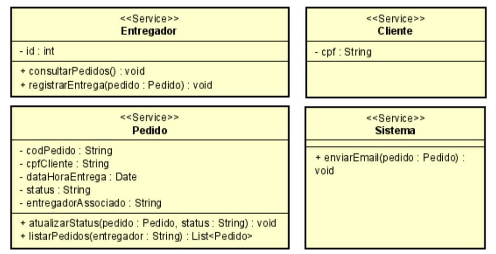
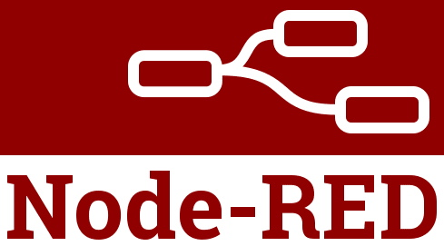

Experiência
Fevereiro de 2023 – Junho de 2023
Estagiário de TI, Município de Machado
Instalação e Manutenção de Computadores visando solucionar um problema diagnosticado no computador, ou antever o problema por meio de análise de situações no funcionamento do computador, relacionado a software e/ou hardware. Monitoramento e manutenção de rede para evitar possíveis falhas. Suporte ao usuário, envolvendo tirar dúvidas sobre questões técnicas ou algum erro de uso do cotidiano nos equipamentos e programas.
Formação
Instituto Nacional de Telecomunicações – INATEL – Engenharia da Computação
Concluído em dezembro de 2023
Instituto Nacional de Telecomunicações – INATEL – Engenharia da Computação
Cursando Pós-graduação em Cloud Computing e Desenvolvimento Mobile, conclusão prevista em fevereiro de 2025
Competências

HTML & CSS
Desenvolvimento web

Java
Linguagem de programação

C#
Linguagem de programação

MongoDB
Banco de dados NoSQL

Unity
Plataforma de desenvolvimento de jogos

Azure
Plataforma cloud da Microsoft
Projetos
Projeto 1
Projeto de pós-graduação, desenvolvido na plataforma Unity, explora conceitos de desenvolvimento de jogos e suas mecânicas. O nome do jogo desenvolvido é "Sombra do Pesadelo", na qual você é Anna, uma jovem que acorda em uma mansão sinistra sem memória de como chegou lá. Assombrações a perseguem enquanto a escuridão ameaça consumi-la. Anna deve confrontar suas memórias sombrias e encontrar lembranças escondidas em brinquedos de pelúcia para manter sua sanidade. Cada passo em direção à verdade a aproxima de um destino incerto. Anna conseguirá escapar da mansão e de sua mente atormentada ou estará condenada a vagar eternamente?
Projeto 2
Desenvolvimento de um serviço web para gerenciar entregas e pedidos, abrangendo funcionalidades de busca, confirmação e listagem de pedidos, além do envio de e-mails de notificação. As rotas implementadas permitem obter todos os pedidos, buscar um pedido específico, confirmar a entrega por entregadores e listar pedidos atribuídos a um entregador. A integração com serviços de e-mail exige autenticação em duas etapas para garantir a segurança das notificações. Utilizando tecnologias como Java (Spring Boot) e APIs RESTful, o projeto demonstra a capacidade de criar sistemas robustos e seguros para a gestão eficiente de entregas.
Projeto 3
Bolsista (2022), Desenvolvimento de Prontuário Facilitado com Reconhecimento Biométrico Desenvolvimento de um sistema utilizando Node-RED e IBM Cloud para integração IoT e banco de dados, além da utilização da placa NodeMCU com leitor biométrico DY50 para a autenticação biométrica em prontuários médicos.